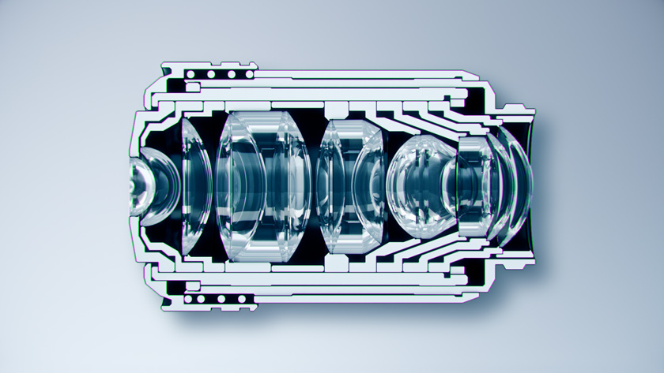
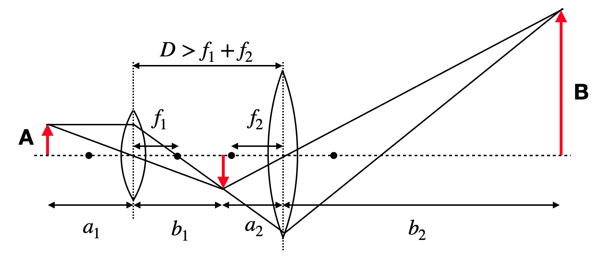

Lens Systems and Optical Instruments
Lens Systems
Most of the optical instruments consist of multiple lenses that are used to image objects or to magnify them. They are combined at distances, which are either larger or smaller than the sum of their focal distances. The image below shows for example an artifical image of a lens system contained in a single microscope objctive lens, where you see multiple elements e.g. doublets and triplets of lenses. These elements as joined objects may considerably improve the performance of the optics, e.g. correct for imaging errors.
|  |
|---|
| Fig.: System of of lenses inside a microscope objective lens. |
We will consider first a pair of two bi-convex lenses that are at a distance \(D>f_1+f_2\)m where \(f_1\) and \(f_2\) are their focal distances.
|  |
|---|
| Fig.: System of two bi-convex lenses at a distance larger than the sum of their focal distances. |
Here the first lens creates an image at a position
\[b_1=\frac{a_1 f_1}{(a_1-f_1)}\]
Accordingly the object distance for lens 2 is then \(a_2=D-b_1\).
The second lens then images this intermediate object into
\[b_2=\frac{a_2 f_2}{a_2-f_2}=\frac{(D-b_1) f_2}{D-b_1-f_2}\]
from which we can finally calculate the image location and also size with the help of \(b_1\).
Instead of doing a lengthy transformation I would like to draw your attention to a simple method which arises from the linearization of Snells law. This is called matrix optics. Matrix optics relates the outgoing angle \(\theta_2\) and height \(y_2\) of an optical element to its incident angle \(\theta_1\) and \(y_1\) via a matrix operation. Let’s have a look at an example of a bi-convex lens with a focal length \(f\). An incident ray is then expressed by a vector
\[\begin{bmatrix} y_1\\ \theta_1 \end{bmatrix}\]
which is converted by the lens into an outgoing ray vector
\[\begin{bmatrix} y_2\\ \theta_2 \end{bmatrix}\]
If you have two 2D vectors which you want to transform by a linear operation into each other, then the transformation can be described by a 2x2 matrix, which is given for a lens with
\[\begin{bmatrix} A & B\\ C & D \end{bmatrix} = \begin{bmatrix} 1 & 0\\ -\frac{1}{f} & 1 \end{bmatrix} \]
Similarly we can also define a free space propagation matrix for a propagation by a distance \(D\), which is
\[\begin{bmatrix} A & B\\ C & D \end{bmatrix} = \begin{bmatrix} 1 & D\\ 0 & 1 \end{bmatrix} \]
The propagation of light through two lenses, which are seprarated by a distance \(D\) is then the product of two matrices for the lenses and one for the free space. The transformation then in addition requires to multiply from the right side the incdent vector and we obtain on the left side the outgoing ray vector.
\[\begin{bmatrix} y_2\\ \theta_2\\ \end{bmatrix} = \begin{bmatrix} 1 & 0\\ -\frac{1}{f_2} & 1 \\ \end{bmatrix} \begin{bmatrix} 1 & D\\ 0 & 1 \end{bmatrix} \begin{bmatrix} 1 & 0\\ -\frac{1}{f_1} & 1 \end{bmatrix} \begin{bmatrix} y_1\\ \theta_1 \end{bmatrix}\]
If you multiply the 2x2 matrices with each other, you will obtain a new 2x2 matrix with a matrix element \(C\), which should correspond to the effective focal length of that system. This is the case since the element \(C=-\frac{1}{f}\)
The result of that calculation is
\[\frac{1}{f}=\frac{1}{f_1}+\frac{1}{f_2}-\frac{D}{f_1 f_2}\]
which gives the effective focal length of two bi-convex lenses at a distance \(D\).
Following this equation the inverse of the total focal length of the combined lenses is just the sum of its inverse focal distances minus a term, which depends on the distance of the two lenses. If this distance is small as compared to the focal length, i.e. the lenses are close to each other, the total inverse focal is just given by the first two terms. The inverse focal distances characterize the refractive power of a lens. The larger the invserse value, the smaller is the focal distance. This refractive power is commonly measured in the unit diopter. One diopter corresponds to 1 dpt=1 \(m^{-1}\).
The image above shows also, that in the case of the combined lenses and a real inverted intermediate image, the final image will be upright again. Thus, if the first lens has a magnification \(M_1=-b_1/a_1\) and the second lens a magnification \(M_2=-b_2/a_2\) the total magnification is the product, which is
\[M=\frac{b_1}{a_1}\frac{b_2}{a_2}\]
from which we may finally obtain with \(M=\frac{f}{f-a}\)
\[M=\frac{1}{1-\frac{a_1}{f_1}-\frac{a_1+D}{f_2}+\frac{a_1D}{f_1 f_2}}\]
For more than two lenses, there is a versatile framework called Matrix Optics, which treats each optical element as a 2x2 matrix. This becomes possible as we derived earlier equations which were linear in \(y\) and \(\theta\). A whole system of different lenses, plates and other optical elements can thus be treated as a matrix multiplication, which is quite useful.